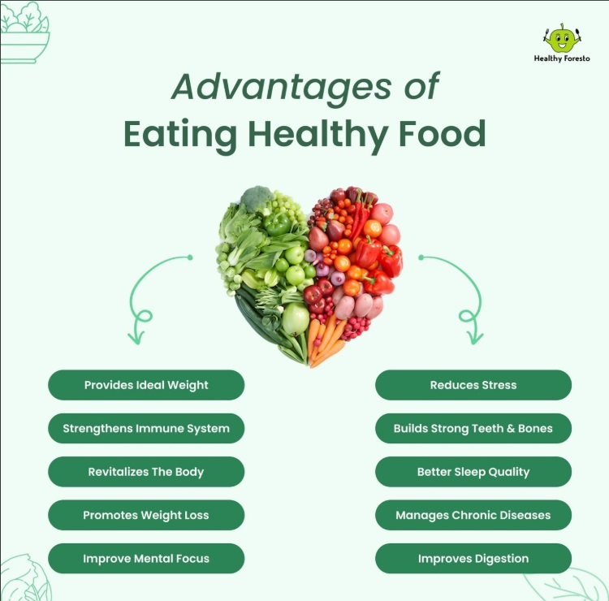

Healthy eating centers on nutrient-dense whole foods: vegetables and fruits provide fiber, vitamins, and antioxidants linked to lower risk of heart disease and
certain cancers; whole grains like oats and brown rice improve gut health and help stabilize blood sugar; legumes, nuts, and seeds supply plant protein, healthy
fats, and minerals such as magnesium and zinc; lean proteins (fish, poultry, tofu) support muscle maintenance, with fatty fish offering omega-3s associated with reduced
inflammation; fermented foods (yogurt, kefir, kimchi) contribute beneficial probiotics for digestive health; olive oil and other unsaturated fats can improve lipid
profiles compared with saturated fats; limiting added sugars, refined grains, and ultra-processed foods supports weight management and metabolic health; adequate
hydration aids digestion and cognition; and balanced dietary patterns such as Mediterranean-style eating consistently correlate with lower cardiovascular risk and
improved longevity.
| Nutrition | Benefits |
|---|---|
| Avocado | Potassium |
| Blueberries | Vitamin C |
| Leafy lettuces | Vitamins K |
| Broccoli | Fiber |
| Cherry Tomatoes | rich in lycopene |
| Bell pepper | Vitamins A |
| Cucumber | provides hydration |
| Whole Grains | provide complex carbohydrates |
| Grilled Chicken Breast | lean protein |
| Lime | Vitamins C |